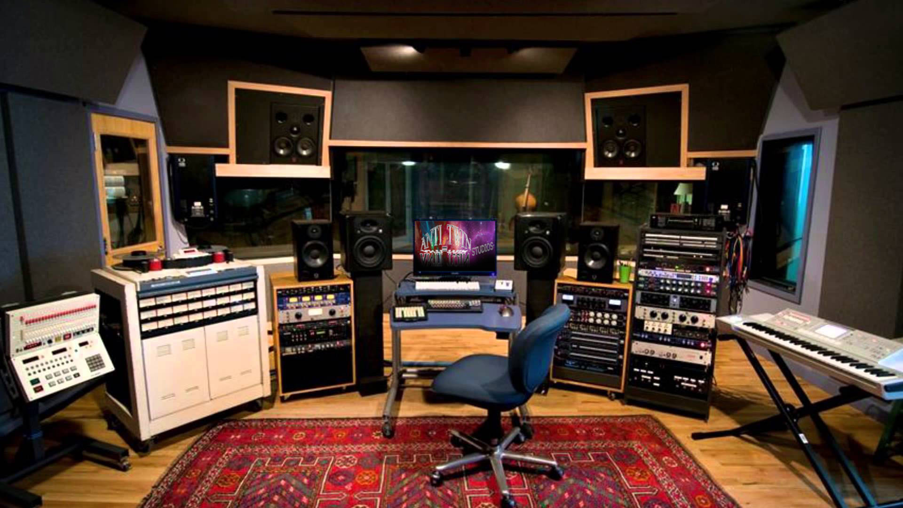
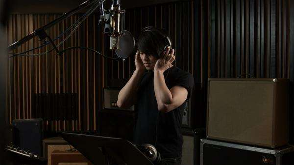
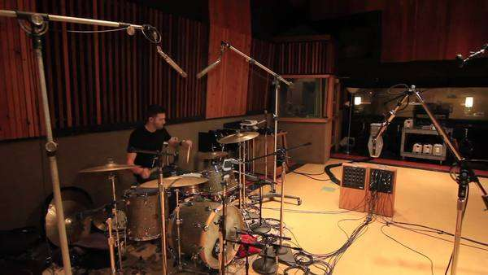

ANTI_TWIN Studios Recording/Mixing/Mastering
Here at ANTI_TWIN Studios we are your one-stop-shop for all your recording/mixing/mastering needs. We excel in providing clean, crisp, and highest quality audio recordings at respectable prices plus free coffee. Are you in a band and need a high-quality demo or EP? Does your company need a well-produced audio commercial for radio play? Do you require a cornucopia of fart sounds for your prank soundboard? Well then, ANTI_TWIN Studios is here for you.
Our studio has two large recording rooms fully equipped with state of the art audio equipment, large open band recording area, and comfortable climate controlled break rooms. We also have a dinosaur petting zoo in the back for the kids. Check out our contact page for more information or come in today and check out the chill vibes that emanate from every awesome square inch of our sound palace.
